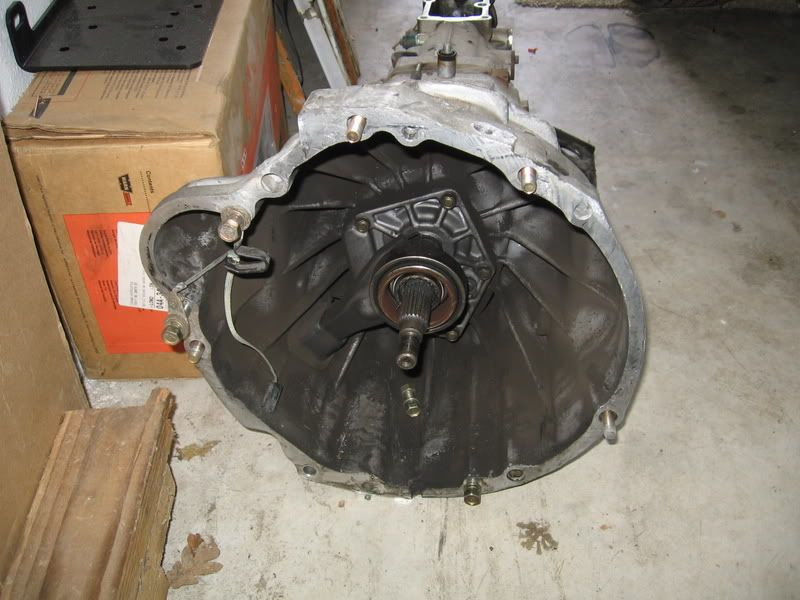

-
Does anyone here know for sure if a 2WD VG Pathfinder 30A trans will bolt in without modification on our cars? I've searched around and found conflicting views on the subject. The transmission (mainly the rear housing) looks a bit short and the shifter does not look like it is mounted at an angle like the Z31 30A, but a few people have said that it will work with no issues. I've been looking for a cheap and easier to find alternative to a Z31 transmission, and right now a 240SX 71C looks to be the way to go, but I would prefer a 30A. Any input is appreciated.Tinker Toy Equipped

-
*I have not put one in personally*
I have seen 5-6 people use Pathfinder 30A's and said nothing of differences. As I understand it there are no differences but the gear ratios. Those are very close and not worth worrying about.http://z31performance.com/forum/viewtopic.php?f=5&t=147 -
Not to thread jack, but which pathys came with 30A? No z31t's anywhere near here, but many pathys.88 N/A 300zx (Slow....) -
I believe all the VG33 powered Pathfinders/Frontiers/Xterras came with the 30A. Also i'm pretty sure some of the VG30 Hardbodys could come with the FS5R30A as well.sporklift wrote: Not to thread jack, but which pathys came with 30A? No z31t's anywhere near here, but many pathys.
Anyone know the difference between the FS5R30A and FS5R30B transmissions?545 RWHP & 540 RWTQOriginally posted by Andrew84zx
tell her your car is so fast it will make her panties fly off

-
[quote]FlawleZ wrote:placement of one of the switches on the passenger side is ahead of the center section, and one behind.Originally posted by sporklift
far as i remember, on the R30A- they're close together. externally they look the same.
not sure about bell and starter position. -
[quote]Careless wrote: [quote=FlawleZ]I know its off topic of the 30A, but do you know the difference of the 71B and 71C?Originally posted by sporklift- VG30DET (HE341) 86 300ZX - 1982 280ZX Turbo - Headered NA 1986 300ZX 2+2 - 2000 Xterra - -
Ok, I thought I had posted these pics up a long time ago but I guess not. These are pics of the pathy/pickup transmissions and one is of a late model z32 r30a with a pickup bellhousing. I have no idea if these work or not in a z31 because I have always been deterred by the fact that they don't have the angled shifter or right looking shifter plate at all....
Also, according too many sources all r30a are 29" long BUT I am pretty sure the z31's version is longer because we all have to lengthen the DS when installing a z32 transmission. The truck/pathy transmissions are in FACT 29" long I have on here at my house currently so please don't tell me I don't know what I am talking about.
z32/pathy r30a

truck/pathy 2wd r30a

If anyone actually bolts one up into a z31 please take pics so I can see what the shifter looks like in there!"Its the s12's sexy over weight step daughter, the z31" -
One has a shifter plate and the other looks like an l-series with an external shifter rod attached directly to the shifter itself. 720 pickups had the 71b and 87 HB's had the 71c's but internally they were the same transmission.michaelp wrote: I know its off topic of the 30A, but do you know the difference of the 71B and 71C?"Its the s12's sexy over weight step daughter, the z31" -
Doesn't the KA frontier have a 30a too?BLOZ UP.com
It is not recommended to confirm proper installation by driving into walls or other barriers as this could cause personal injury or damage to the vehicle. -
no, the KA tranny looks like this and its a 71c variant, a bit stronger than the other 71c's and looks the part too!
"Its the s12's sexy over weight step daughter, the z31" -
Mmmm, good info here. Me likey…88 N/A 300zx (Slow....) -
Oh, and you can see the differences in the shifter plates like I was talking about. I think fs5w71c's shifter could work with the z31 r30a's but I dont think they will work with the pathy/truck transmissions. I may have to pull the shifter off the frontier transmission and give it a try, since its the only 71c I have out of a vehicle right now."Its the s12's sexy over weight step daughter, the z31" -
how bout a z32 tranny with a pathfinder bell housing in a z31? shifter issues? drive shaft issues? clutch issues? -
Seriously? The first picture I posted is of what your describing. Its the same as doing the z32 tranny swap with the exception of having to buy the unexplainable maxima flywheel."Its the s12's sexy over weight step daughter, the z31" -
sorry i wasnt sure what the 30a was reffering to exactly, i didnt know the part #s.
does it bolt to the existing crossmember or do i have to get a xmember from a manual z31 or do i have to make a custom one?.
thanks.

Copyright © 2006–. All rights reserved. Privacy Policy